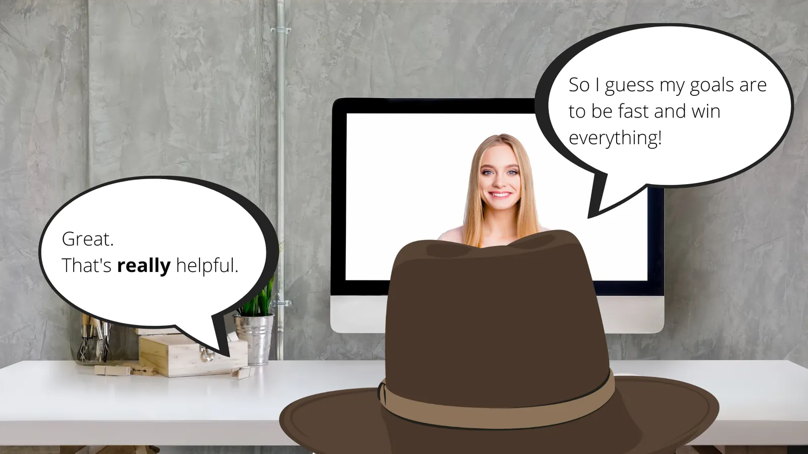
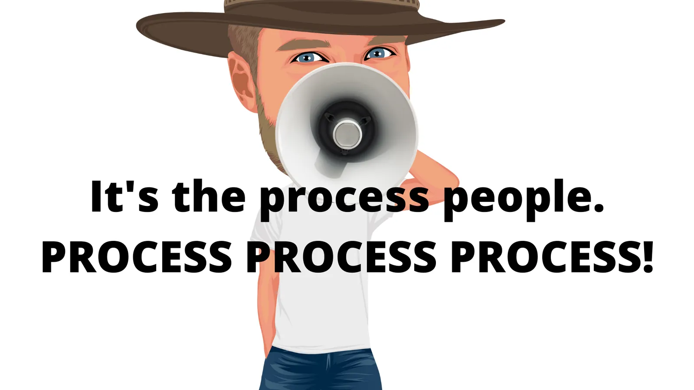
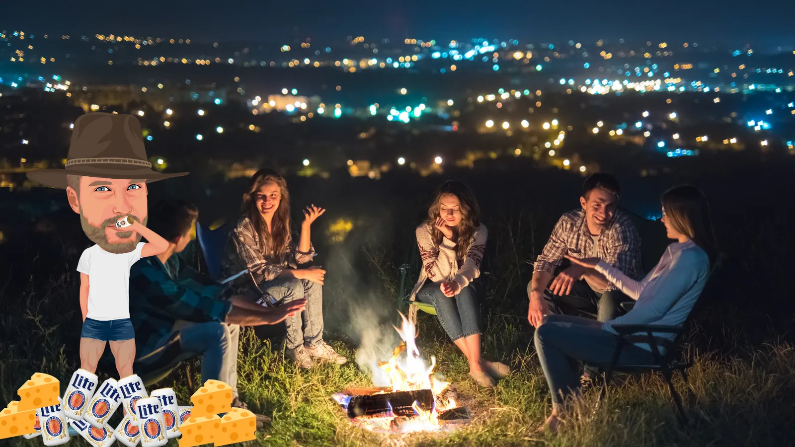
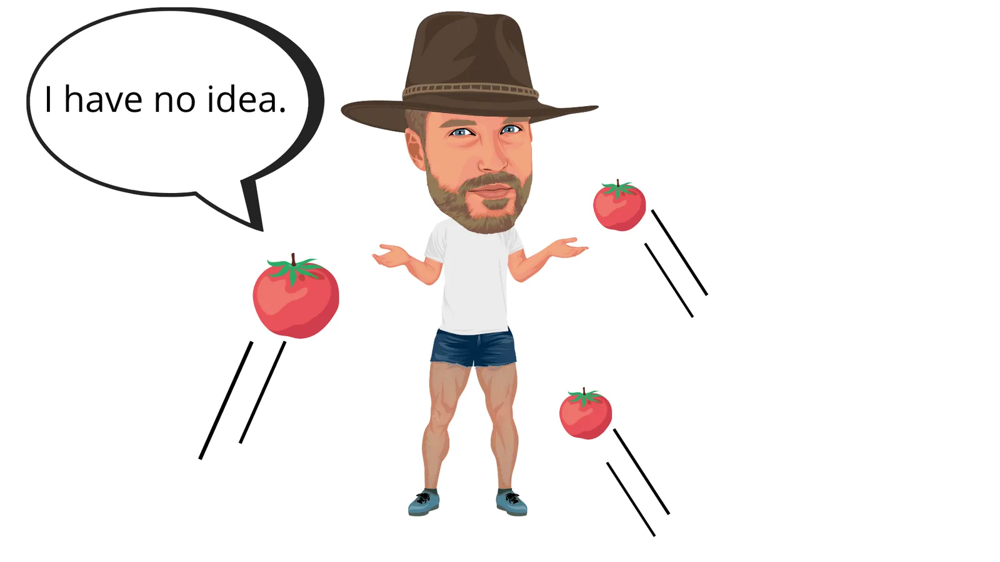
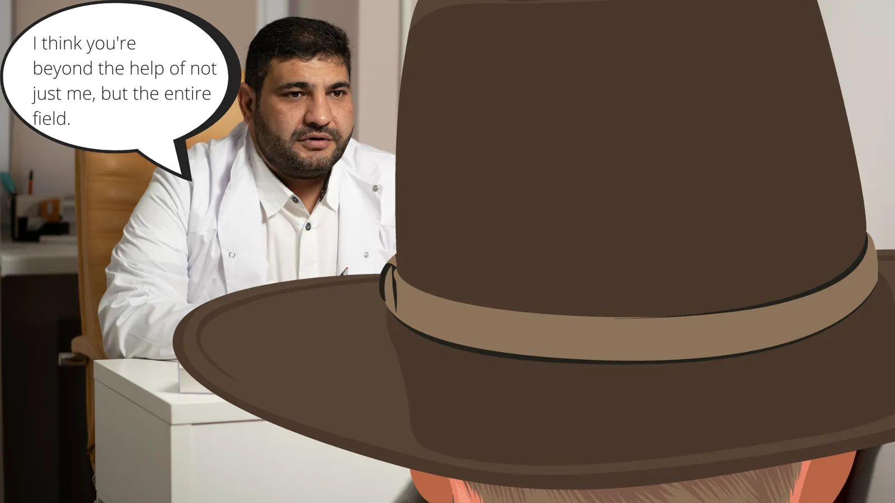
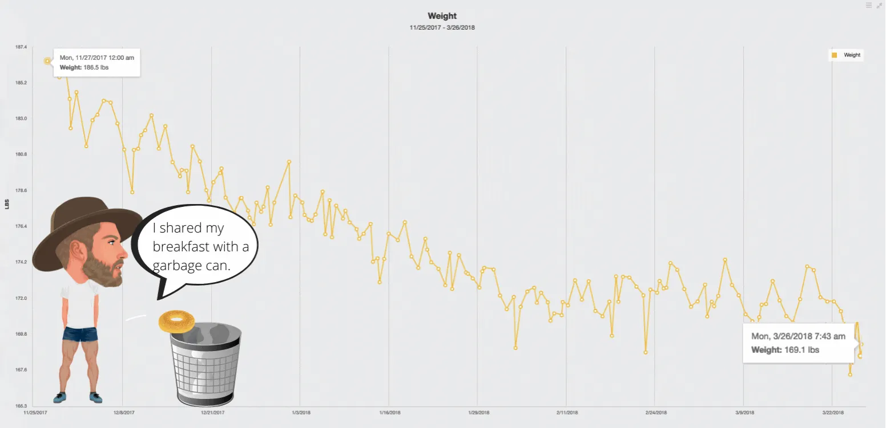
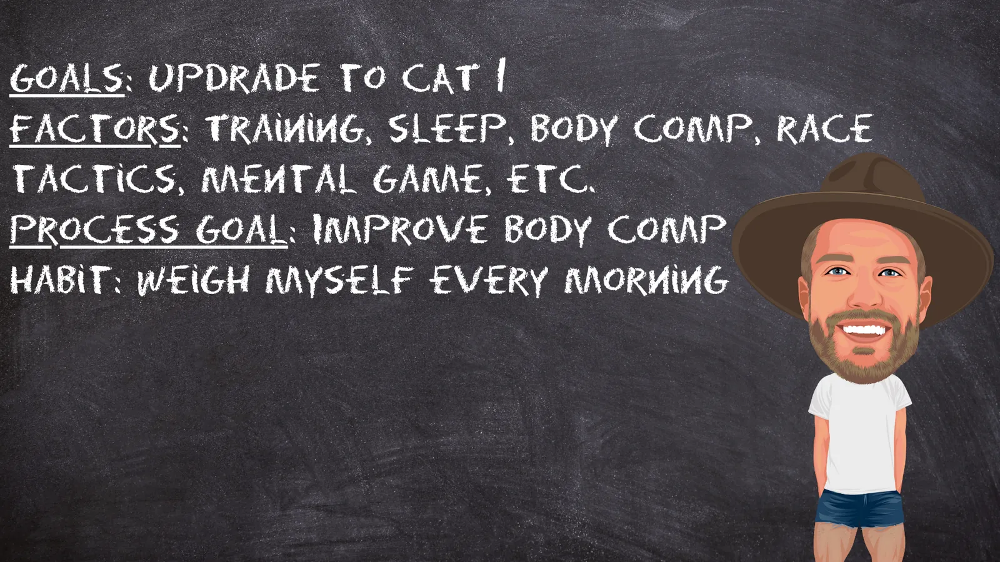

It’s dreaming season. Many of my athletes are coming off a break from training, spending every pedal stroke on their bike thinking about the races they want to do next year and what they want to achieve.
They’d better be. Without that information, I’d have no idea what workouts I should give them. I need my athlete to tell me, “Hey, I care about this race the most, or I want to be generally fast here” otherwise, I can’t build their plan. To start, you have to know where you’re going.
While I can’t build their program without a goal, goals are also ironically barely useful. An athlete telling me they want to do well at Unbound 200 is fractionally better off than an athlete who doesn’t know they want to do Garmin Unbound. The only advantage is that we have a target now, but we haven’t taken any step down a path; we’ve just faced a direction.
This is where the real work of goal-setting begins and where most athletes (and coaches) stop planning. They write the goal down, put it somewhere prominently so they can’t forget about it, and think that the sight of it will somehow guarantee a good outcome that they haven’t even defined.

With this approach, a few things are certain. The athlete will not know whether they did well or poorly at their race because they haven’t defined success. That’s bad, but it’s not as bad as not figuring out their strengths and weaknesses in relation to the race’s demands and goals – that’s the real dream killer.
Sure, failing to define what constitutes success or failure isn’t great, but it’s not as important as many people make it out to be. The real problem of not defining what success looks like isn’t that it’ll increase your chance of failure; it’s that if you succeed, you won’t know you have. It would be quite sad if an athlete kicked ass and then didn’t realize it, but it’s not fatal.
What’s fatal is not knowing your strengths and weaknesses in relation to the demands of the race and your goals. It is the most crucial part of a goal achievement framework because it informs your training process. Process, process, process – PROCESS is the difference between great goal setting and poor goal setting.

James Clear’s ‘Atomic Habits’ may have started to fade from the zeitgeist, but his book on achieving goals remains one of the most valuable guides in the last 20 years on how to achieve goals. He says a lot, but the most important reframing of achieving goals is ironically to minimize the significance of the goal and emphasize the significance of the process.
The process is simply a collection of habits. Habits are actually a neutral construct – they’re automated ways of solving problems – they’re not intrinsically good or bad until they’re framed in relation to an outcome. For example, watching Netflix every night until 2 am is a habit. The problem is boredom, and the action that resolves the boredom is Netflix. You might think that’s automatically bad, but intrinsically it’s not. Sure, your sleep might be trash from blasting your eyes with light, but really, there’s nothing objectively wrong with it until we insert a goal with which we can assess the efficacy of our habits on an outcome.
Make no mistake, how we feel and what we achieve is a lagging outcome of our habits, good and bad.
Clear goes a step further and says if you really want to achieve escape velocity in your life, you don’t just work to refine your habits to support the outcome you want; you take the elevator a floor down and refine your identity. Clear asserts that identity, which is the collection of beliefs about ourselves, matters most because our habits stem from our beliefs about who we are. If that sounds vague to you, you’re not alone – that sounded like ‘woo woo’ to me also, but he gave a good example. If someone offered you a cigarette (bear with me, I know you all have American Spirits when you’re drinking), you wouldn’t say, “No thanks, I’m trying to quit,” you’d say, “No thanks, I’m not a smoker.”
See the difference? The action is the same – regardless of the response, you’re not having a cigarette. But one person is trying not to be something they identify with, and the other is doing something they identify with. Over time, you’ll never outrun the incongruence between who you think you are and what you do, or so Clear says.
I don’t buy that claim that much, mainly because it’s vague. Likely, you’re not trying not to smoke; you’re trying to become a faster cyclist, so how does that look at the identity level? All of your habits are supposed to evolve from the statement ‘What would a fast cyclist do?’ Fast cyclists do a lot of things, but it’s not a universal, comprehensive suite of habits you can discover and adapt to your life because fast is a relative term; there are many ways to be a cyclist, so that identity doesn’t have enough of a handhold for you to orient yourself in the world and create habits that mean anything on a day today.
No, the part of the claim about identity Clear leaves out is that your identity isn’t just your beliefs about what you are, and this is crucial – it’s also about what you want. For those of you that aren’t getting your desired outcomes, the key problem is that some of the things you want undermine the habits required to produce those outcomes.

For example, I like to party, and I like eating vast quantities of delicious food. Partying and consuming vast amounts of delicious foods directly interfere with my potential to be a fast cyclist. Sure, I can be disciplined. Sure, I can hold off from those temptations. But at the end of the day, my favorite part of training and racing is the after-party after a big race (or ride), where I notch a decent result and will be pressed to out eat or drink the caloric deficit of a 5-12 hour ride. Underneath it all, that’s what I want. I want to feel a suspension in reality, feel the memories of recent absurd exertion blow through my cortex as I sit and imbibe and eat with my buddies. There’s nothing inherently wrong with that, but that desire also holds me back the most.
How? I probably have 20 such instances through the year in which I let my discipline completely slip and really charge after a ride. As a rule, the next day, I’m physically (and sometimes mentally) ruined. Sometimes that extends to another day. That means over a year, conservatively, I have 60 days that are in part compromised or attenuated by what I want that directly interferes with my cycling potential. Two months out of a year!
Imagine if what I wanted was a book, tea, and an early bedtime? It doesn’t sound significant, but the net compounding effect of the former and latter want is the difference between who I am and what I could be. Yes, the post-race/ride habit is the issue here, but it’s just a symptom, not a cause. If I want to change an outcome fundamentally, I have to change what I want.
So how do you change what you want?

Actually, I do have an answer to that. I don’t think it’s fair to build up a thesis without offering any hypothesis. If you want to change what you want, you probably have two options:
First, manage your dopamine. Whatever you reward, you seek, so it’s important to watch yourself carefully and correct yourself when you’re drawn overmuch to one reward pathway or another. The little secret here is a Buddhist sentiment – the less you want, the freer you are. The most effective athletes I know revel in low-grade-ecstasy. They don’t want a night out on the town; their big night is another bowl of popcorn. They’re not staying up late; they’re engaged in a bizarre competition with themselves to see if they can average 9 hours of sleep per night. Your progress accelerates when you can twist what you want to serve the habits that move you forward.
Alternatively, to change what you want, you become the kind of person whose desires interfere with your former desires. Damn, though – that’s a leap. For me, that means being the sort of person who doesn’t just want but is proud of, early bedtimes, sleepytime tea, sobriety, and unprocessed foods. That is change. That is hard. Where’s your money on me changing this?
Setting aside how you can change what you want, realize that changing what you want to align with habits that support your goals is effective because you stop fighting yourself. You break the pattern of ‘being good’ so you have a release where you can ‘be bad’, because you don’t even want that release. You’re hardly ever going backward in relation to your goals, and the compounding effect of that overtime is the difference between what you are and what you could be. And the real kicker? You’re trying less hard than you were before because you’re not waging war against yourself.

So, let’s get out of the shrink’s office and back to reality. Sure, you could go deep and examine what you want, but that’s freaking hard. Most people don’t want to even think about what they want, much less work to change it if it would serve their cycling goals because the tradeoff just isn’t worth it to them. They like their life well enough already. They want to ride hard, get some space from their life stressors, and spend time with their fools. But hey, there’s no harm in seeing the real potential to change.
Realistically, however, that’s not you (that’s not a dig, it’s certainly not me either). If you want to smash 2022, you need to figure out what habits will influence the training process the most, and you need to build a system with feedback to make them a daily reality.
The harsh truth is that who you’ll become isn’t something you win or lose tomorrow. It’s a battle you fight today, here in the present.
If you focus on the habits and wage your war against mediocrity here, now, not only will you dramatically increase the chances that you’ll achieve the outcome you want, you’ll also make the process more rewarding.
It turns out that while athletes say they want to train to achieve an outcome so they can feel a certain way, what they actually enjoy is the feeling of progression during the process. The trouble is that if you don’t create a system of habits, you won’t notice those microprogressions and thus rob yourself not just of the satisfaction of small wins but of the small feedback you need to know if you’re on track.
For example, a few years ago, I was stuck in CAT 2 la-la land, and despite decent years of training and a few results, I hadn’t gotten the points necessary to upgrade to CAT 1. After listing a few contributing factors, I pared the list down to one of the most obvious and hard to confront – I weighed too much.
On Thanksgiving 2017, I stepped on the scale. It blinked and read 186.5. That sucked to see – that’s a good 15 pounds over what I should be racing at, but it was what it was. At the back of my mind, I knew that poor diet and body composition were holding me back, but I didn’t want to face it.

The chart above, redrawn
Every morning on the scale
How did I address it? I weighed myself every day, without fail. Every morning, no matter how I felt or what I did the night before, I got up and stepped on the scale. It was immediate feedback, and while it could be frustrating or harsh, it was daily, incontrovertible evidence of whether I was on course or off. Knowing what I weighed in the morning subtly influenced my choices throughout the day. While it was an imperfect, uneven process, after four months, my weight had dropped to 169.1 pounds by early March.
What happened on the bike? I won every race I entered, quickly upgraded, and finished my season by accepting an offer from EF Pro Cycling to ride the Classics in Europe the following year and dominate the US Gravel circuit.
Just kidding. I didn’t win shit. Better results came slowly, but I started making selections I’d normally miss, grabbing a point here, a point there, before finally finishing 5th overall at Green Mountain Stage Race in Vermont and getting enough points to upgrade to CAT 1.
Was it all because of how much I weighed? No. I still had to pedal; I still had to steer – success was polycausal. But let’s not pretend that not carrying around an extra 18 pounds on my bike every second of every ride didn’t have a significant influence on my performance. Next time you’re in the weight room, go pick up a 20-pound weight and imagine carrying that around all the time.

So let’s review that feedback loop. The outcome I wanted was to upgrade from a CAT 2 to a CAT 1. I wrote it down, but I didn’t stop there. I looked hard at the significant factors that were slowing me down. I determined that my body composition needed to change and decided the simplest habit to address that outcome was stepping on the scale every morning, and I did it without fail. Because I made that a daily reality check, I was able to lose 18 pounds in four months which was a major contributing factor to upgrading to CAT 1.
You can do this too. No, I don’t necessarily mean losing weight. That’s not limiting for everyone. As a rule of thumb, start basic and look if habit change there can make a difference. For example, are you missing workouts? That’s basic. If you are, why? Are you leaving them until late in the day, which always leaves them at the mercy of Life? Maybe that means you have to make a habit of getting up early and doing them before work. Perhaps that also means you have to go to bed earlier and cancel Netflix.
Whatever is holding you back, it’s not going to change because you write down ‘Unbound 200’ down as a goal for next year. It might be a direction, but it’s not a process, and without improving your process, you’ll never ride to your potential.
Comments
1 comment from the original post. Comments are closed.
Ed ·
All money this one. Thanks brotha.